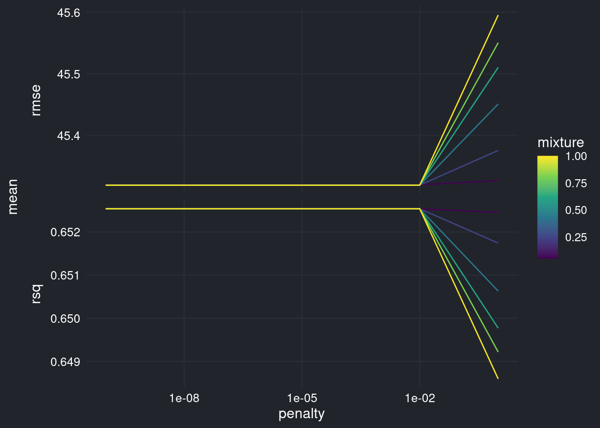
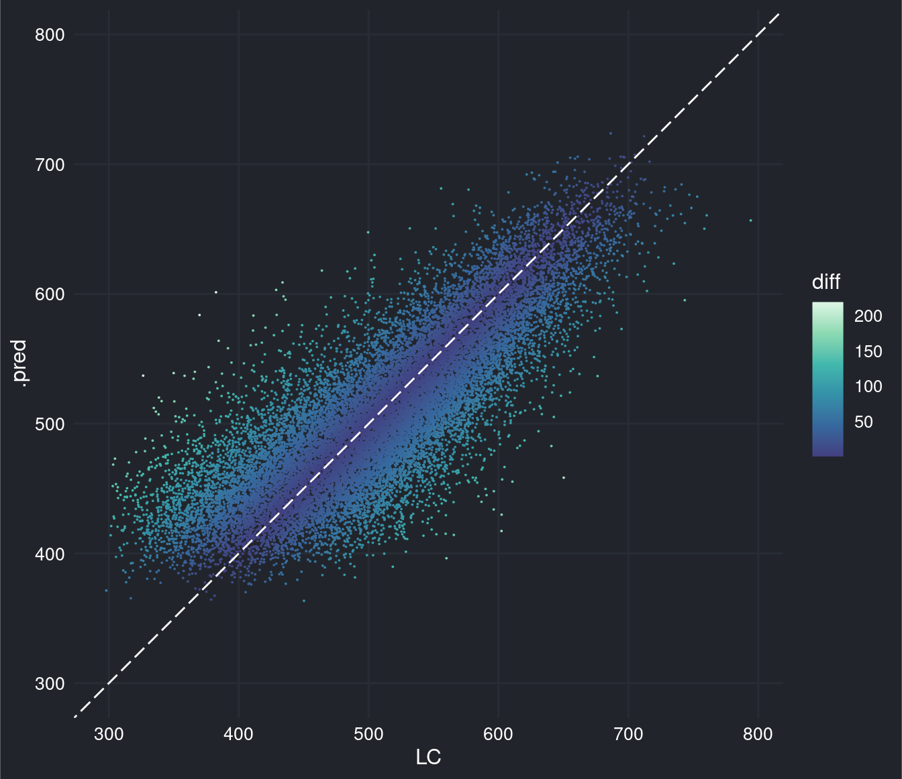

library(tidyverse)
library(tidymodels)
source("misc/themes.R")
microdados <- arrow::read_parquet("dados/microdados.parquet")3 Modelagem
set.seed(0)
microdados_split <- initial_split(microdados)
microdados_train <- training(microdados_split)
microdados_test <- testing(microdados_split)
microdados_fold <- vfold_cv(microdados_train, v = 5)microdados_workflow <- workflow() |>
add_model(
linear_reg(penalty = tune(), mixture = tune()) |>
set_engine("glmnet") |>
set_mode("regression")
) |>
add_recipe(
recipe(microdados_train, LC ~ .) |>
update_role(R, inscrição, região, município, new_role = "id") |>
step_unknown(estado_civil, cor, nacionalidade) |>
step_dummy(all_nominal_predictors())
)microdados_grid <- microdados_workflow |>
extract_parameter_set_dials() |>
grid_regular(levels = 6)
doMC::registerDoMC(cores = 4)
microdados_tune <- microdados_workflow |>
tune_grid(microdados_fold, grid = microdados_grid)
foreach::registerDoSEQ()microdados_tune |>
collect_metrics() |>
ggplot(aes(x = penalty, y = mean)) +
geom_line(aes(color = mixture, group = mixture)) +
facet_grid(vars(.metric), switch = "y", scales = "free") +
scale_x_log10() +
scale_color_viridis_c(
guide = guide_colorbar(ticks = FALSE)
) +
theme_darkly
microdados_best <- microdados_tune |>
select_by_one_std_err(desc(penalty), metric = "rmse")microdados_workflow_final <- microdados_workflow |>
finalize_workflow(microdados_best)
microdados_fit_final <- microdados_workflow_final |>
last_fit(microdados_split)microdados_fit_final |>
collect_predictions() |>
head(20000) |>
mutate(diff = abs(LC - .pred)) |>
ggplot(aes(x = LC, y = .pred, color = diff)) +
geom_point(size = 0.01) +
geom_abline(linetype = 5, color = "#ffffff") +
scale_color_viridis_c(
option = "G", begin = 0.3,
guide = guide_colorbar(ticks = FALSE)
) +
coord_obs_pred() +
theme_darkly
microdados_fit_final |>
collect_metrics()# A tibble: 2 × 4
.metric .estimator .estimate .config
<chr> <chr> <dbl> <chr>
1 rmse standard 45.4 Preprocessor1_Model1
2 rsq standard 0.652 Preprocessor1_Model1